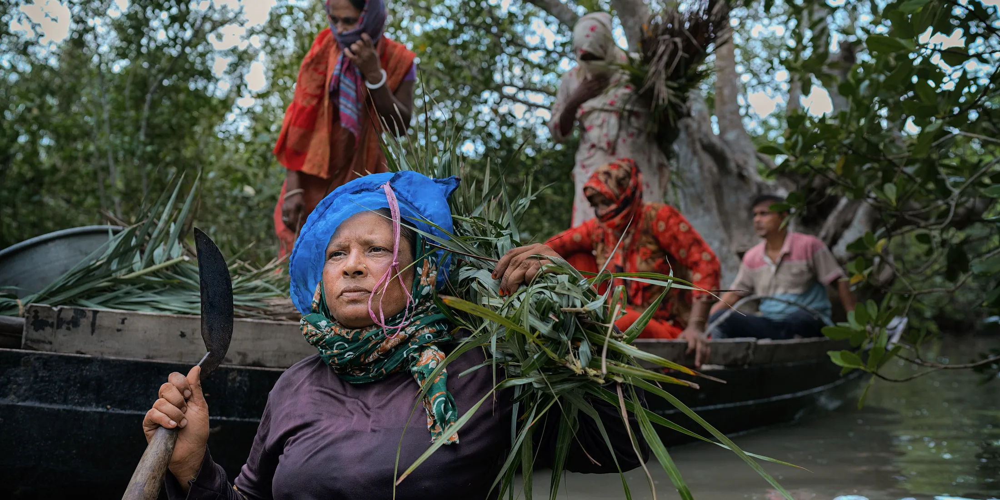
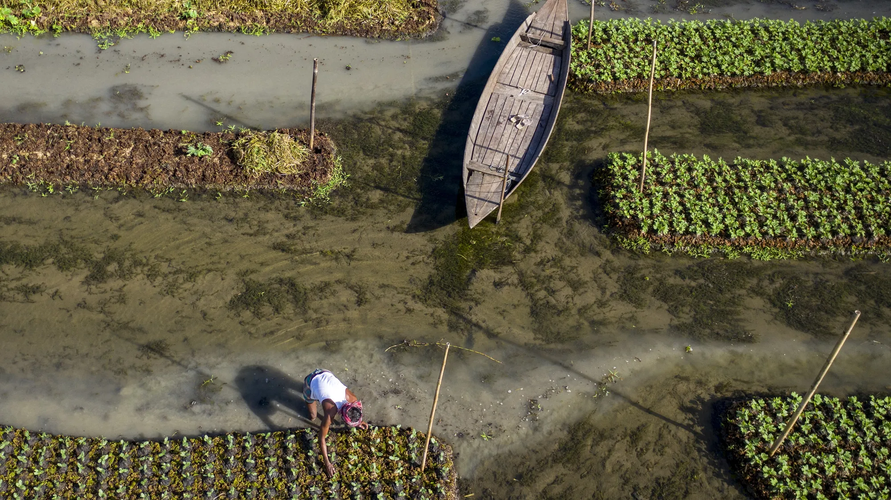

Some of these are seasonal, most are cheap, and none of them are staged for visitors. They would all be happening whether you came or not.
Where a season is listed, it matters. Boat racing without water is just a long boat.
There are somewhere around 100 tigers on the Bangladesh side of the Sundarbans and they swim between islands as a matter of routine. Boat safaris leave from Khulna and Mongla with a forest department armed guard, which is mandatory. You will almost certainly not see a tiger. You will see the tracks, the deer, the crocodiles and the kingfishers, and you will spend three nights on a river with no roads on either side.
Romesh Ram Gour worked out how to layer seven different densities of tea in one glass so that they refuse to mix. It sounds like a trick and it is, but the drink is good, and the town around it is the centre of an industry that has been running since 1854. Walk a garden in the morning, do the tea at midday, then Lawachara in the afternoon.
From June to September Ratargul stands in twenty to thirty feet of water and the only way through is a small rowing boat that fits between the trunks. Engines are banned in the core zone. Go at seven in the morning before the day trippers arrive from Sylhet and the whole thing is silent except for the oar.
Nouka Baich is monsoon boat racing and it is genuinely old. Boats run up to thirty metres, carry eighty to a hundred rowers, and are steered by drum. Villages line both banks. The big races are in Barishal, Manikganj and Munshiganj between July and September, and dates move with the water level.
Jamdani is on the UNESCO intangible cultural heritage list. The pattern is not printed or embroidered, it is built into the weave by hand, thread by thread, by two people working the same loom. Six months for a good sari is normal. The weaving villages are an hour east of Dhaka and the Friday morning Jamdani haat at Demra starts before sunrise.
Ilish is the national fish, it is expensive, and everybody has an opinion about which river produces the best one. Chandpur is the loudest claimant. Season runs roughly July to October, with a government ban during the peak breeding weeks, which is worth respecting. Steamed with mustard, or fried with the oil poured over rice.
The haors sit on the Central Asian flyway. From November the ducks arrive: gadwall, pintail, ferruginous, sometimes Baer's pochard, which is critically endangered. Tanguar and Hakaluki are the big two. You need a boat, a scope, warm clothes for the early mornings and a guide who knows where the birds are that week.
Rickshaw painting joined the UNESCO list in December 2023. The workshops around Bangshal will paint you a panel while you wait: film stars, tigers, mosques, the Padma Bridge, or your own face if you ask. Prices are low, the paint is enamel, and it goes in hand luggage flat.
Bengali new year. Art students at Dhaka University spend a month building enormous papier mache birds, elephants, tigers and suns, then carry them through the city at dawn on Pohela Boishakh. It has been running since 1989. Everyone wears red and white and nobody is a spectator.
The mawali go into the forest in April with smoke and a knife and no protection, to cut wild honeycomb from the mangroves. It is one of the most dangerous seasonal jobs in the country. Some tour operators now run trips that follow the boats without getting in the way. Ask about who is being paid before you book.
Bangladeshi village pottery is still made in family neighbourhoods called pal para, thrown on a heavy hand turned wheel and fired in an open pit. Rayer Bazar in Dhaka is the easiest to reach. Ask before you photograph anyone, and buy something on the way out.
The Bauls are wandering mystic singers of Bengal and their tradition is also on the UNESCO list. Lalon Shah's shrine at Cheuriya near Kushtia holds two big gatherings a year where singers play through the night for three or four days. Sit on the floor, drink the tea, do not clap between songs.
The paddle steamers that run the Dhaka to Khulna route were built in the 1920s and 1930s and some are still in service on parts of the line. First class is two bunks and a fan. What you are buying is fourteen hours of riverbank, tea from the galley, and a country going about its evening on both sides of you.
Chand Raat is the night the moon is sighted. Shops stay open until three in the morning, the streets fill with people getting bangles and mehendi, and half the city is trying to leave for their village at the same time. It is chaotic and generous and nobody sleeps.
